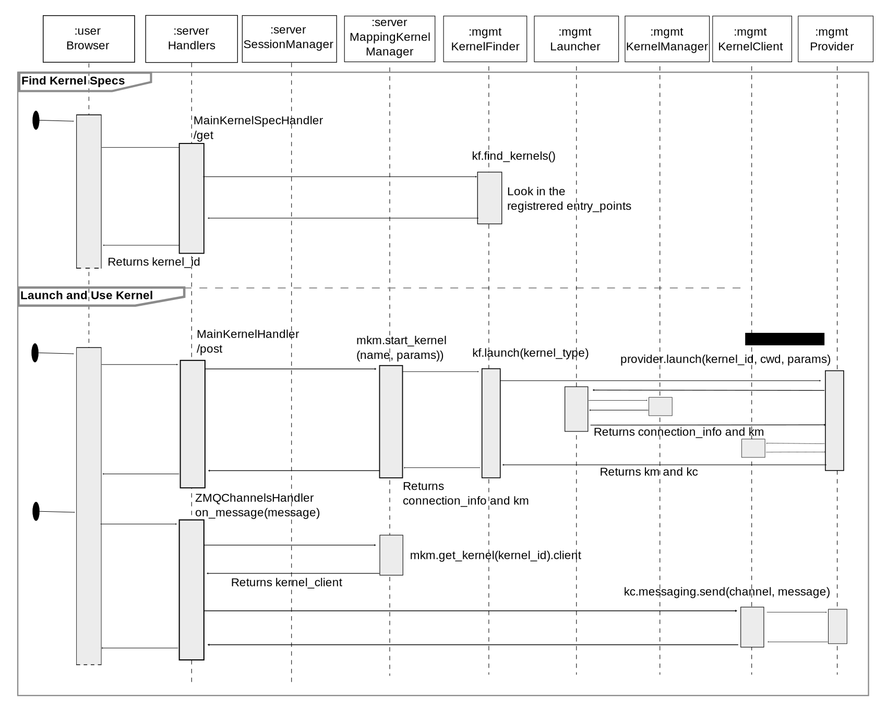

Use with Jupyter Server¶
This page describes the way Jupyter Server uses the Kernel Management module.
On the Jupyter Server side, WEB handlers receive the javascript requests and are responsible for the communication with the Kernel Manager and Providers.
The MainKernelSpecHandler in services/kernelsspecs/handlers is reponsible to find the available Kernel Specs.
The other Handlers located in services/kernels/handlers are reponsible to launch and pass the message to the ZeroMQ channels:
KernelHandler - accessible on endpoint /api/kernels
MainKernelHandler - accessible on endpoint /api/kernels/<kernel_id>
KernelActionHandler - accessible on endpoint /api/kernels/<kernel_id>/{interrupt,restart}
ZMQChannelsHandler - accessible on endpoint /api/kernels/<kernel_id>/channels
Jupyter Server runs with a single ServerApp that initializes each of the handlers with services related to the Kernels:
A
kernel_manager- the default manager is MappingKernelManager provided by jupyter_server.A
kernel_finder- is imported from the jupyter_kernel_mgmt library.A
session_manager- uses a kernel_manager MappingKernelManager.
A single instance of MappingKernelManager is shared across all other objects (singleton pattern).
The MappingKernelManager instance has a KernelFinder field.
The kernel_manager we are referring to in Jupyter Server should not be confused with the kernel_manager of the Kernel Manager it self. To avoid confusion, we will name the Servers’s one mapping_kernel_manager in the next sections.
Notably, the ZMQChannelsHandler has access to the kernel’s client interface via its kernel_client property.
In order to be found by a kernel_finder, Kernel Providers need to register them selves via the entrypoint mechanism.
The included kernel providers, KernelSpecProvider and IPykernelProvider, register by default their entrypoints.
entrypoints:
jupyter_kernel_mgmt.kernel_type_providers' : [
'spec = jupyter_kernel_mgmt.discovery:KernelSpecProvider',
'pyimport = jupyter_kernel_mgmt.discovery:IPykernelProvider',
]
The system administrator can install additional providers. In that case, those external providers can register their own entypoints, see e.g kubernetes_kernel_provider, yarn_kernel_provider…
The interactions sequence between Jupyter Server and the Kernel Management is sketched here. Please note that this diagram just gives an idea of the interactions and is not aimed to reflect an exhaustive list of object constructs nor method calls…
